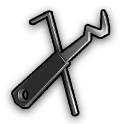

ROB RUN Schlüssel: Was jeder öffnet
In Looty Bay gibt es 14 Schlüssel für den Safe, 13 Zimmerschlüssel und 6 besondere Schlüssel und Karten für die wertvollsten Räume. Schlüssel findest du in der Stadt, oder du bekommst sie im Tauschhandel mit Lenny. Hebst du einen Schlüssel auf, wird sein Schloss auf deiner Karte markiert. Nur Verbrecher können Schlüssel benutzen, also setz vorher deine Maske auf.
Aktualisiert am . Das Spiel ist im Early Access und ändert sich jede Woche.
So funktionieren Schlüssel
- Schlüssel für kleine Safes und verschlossene Türen findest du überall in der Stadt. Hinter den Schlössern liegt oft wertvolle Beute.
- Hebst du einen Schlüssel auf, wird sein Schloss auf deiner Karte markiert. Auch die Beschreibung des Schlüssels sagt, was er öffnet.
- Nur Verbrecher können Schlüssel benutzen.
- Hinter der Verdächtigen Tür in Lennys Motel gibt es Tauschhandel: Tausch deine Funde gegen Bohrer, Schlüssel und anderes Werkzeug für Raubzüge.
Schlüssel für den Safe
 Alle 14 heißen „Schlüssel für den Safe“. Die Beschreibung des Schlüssels sagt, welchen Safe er öffnet:
Alle 14 heißen „Schlüssel für den Safe“. Die Beschreibung des Schlüssels sagt, welchen Safe er öffnet:
| Bezirk | Was er öffnet |
|---|---|
| Sunny Beach | Öffnet den Safe im Seasons Hotel in Sunny Beach. |
| Sunny Beach | Öffnet den Safe im Reef Hotel in Sunny Beach. |
| Sunny Beach | Öffnet den Safe in der Apotheke in Sunny Beach. |
| Sunny Beach | Öffnet den Safe im Café am Pier in Sunny Beach. |
| Sunny Beach | Öffnet den Safe im Minimarkt in Sunny Beach. |
| Sunny Beach | Öffnet den Safe im Elektronikgeschäft in Sunny Beach. |
| Innenstadt | Öffnet den Safe im Minimarkt im Norden von Innenstadt. |
| Innenstadt | Öffnet den Safe im Minimarkt im Zentrum von Innenstadt. |
| Innenstadt | Öffnet den Safe in der Apotheke in Innenstadt. |
| Innenstadt | Öffnet den Safe im Café in Innenstadt. |
| Innenstadt | Öffnet den Safe an der Tankstelle in Innenstadt. |
| Loraine Hills | Öffnet den Safe im Herrenhaus in Loraine Hills. |
| Loraine Hills | Öffnet den Safe in einem der Ferienhäuser in Loraine Hills. |
| — | Öffnet den Safe im Stripclub. |
Zimmerschlüssel
 Alle 13 heißen „Zimmerschlüssel“. Die Beschreibung sagt, welchen Raum er öffnet:
Alle 13 heißen „Zimmerschlüssel“. Die Beschreibung sagt, welchen Raum er öffnet:
| Bezirk | Was er öffnet |
|---|---|
| Sunny Beach | Öffnet den verschlossenen Raum im Waffenladen in Sunny Beach. |
| Sunny Beach | Öffnet den verschlossenen Raum im Ausrüstungsgeschäft in Sunny Beach. |
| Sunny Beach | Öffnet die verschlossene Tür in der Apotheke in Sunny Beach. |
| Sunny Beach | Öffnet die verschlossene Tür im Minimarkt in Sunny Beach. |
| Sunny Beach | Öffnet die verschlossene Tür in einem der Hotels in Sunny Beach. |
| Innenstadt | Öffnet den verschlossenen Raum im Waffenladen in Innenstadt. |
| Innenstadt | Öffnet den verschlossenen Raum im Ausrüstungsgeschäft in Innenstadt. |
| Innenstadt | Öffnet den linken versteckten Raum an der Tankstelle in Innenstadt. |
| Innenstadt | Öffnet den rechten versteckten Raum an der Tankstelle in Innenstadt. |
| Innenstadt | Öffnet den verschlossenen Raum in der Apotheke in Innenstadt. |
| Innenstadt | Öffnet den verschlossenen Raum im Minimarkt in Innenstadt. |
| Loraine Hills | Öffnet den verschlossenen Raum in einem der Ferienhäuser in Loraine Hills. |
| — | Öffnet den VIP-Raum im Stripclub. |
Schlüsselkarten und besondere Schlüssel
 Grand Hotel: geheimes Lager
Grand Hotel: geheimes Lager Polizeirevier: verschlossener Raum
Polizeirevier: verschlossener Raum Bank: ID-Karte für den Goldtresor
Bank: ID-Karte für den GoldtresorSechs besondere Schlüssel und Karten öffnen die wertvollsten Räume der Stadt:
| Bezirk | Was er öffnet |
|---|---|
| Sunny Beach | Öffnet das geheime Lager im Grand Hotel in Sunny Beach. |
| Innenstadt | Öffnet den Goldtresor in der Bank. |
| Loraine Hills | Öffnet den verschlossenen Raum in einem der Ferienhäuser in Loraine Hills. |
| Palmside | Öffnet den verschlossenen Raum im Polizeirevier. |
| Palmside | Öffnet die Waffenkammer im Polizeirevier. |
| Palmside | Öffnet den Tresor in der Galerie. |
So bekommst du den Bohrer und die ID-Karte für den Goldtresor
- Öffne verschlossene Räume und hacke die Computer darin: Das füllt das USB-Hacking-Tool.
- Tausch ein volles USB-Hacking-Tool gegen einen Bohrer oder verkauf es.
- Der Banksafe öffnet sich nur mit einem Bohrer. Er arbeitet langsam und laut, und sobald er platziert ist, weiß ganz Looty Bay davon.
- Jedes geknackte Schließfach füllt die Schließfachschlüssel. Volle Schlüssel tauschst du gegen die ID-Karte für den Goldtresor, oder du verkaufst sie.
Dietriche, Hauptschlüssel und anderes Werkzeug

DietrichErmöglicht dir, Türen und Container zu öffnen, ohne den Alarm auszulösen, sowie den Kofferraum eines fremden Fahrzeugs zu knacken. HauptschlüsselEin Schlüssel für den Zugang zu den geschützten Lagern anderer Spieler.
HauptschlüsselEin Schlüssel für den Zugang zu den geschützten Lagern anderer Spieler. Kofferraum-DietrichEin Werkzeug zum Aufbrechen des Kofferraums eines fremden Fahrzeugs.
Kofferraum-DietrichEin Werkzeug zum Aufbrechen des Kofferraums eines fremden Fahrzeugs. BohrerEin Werkzeug zum Aufbrechen von Banktresoren. Dauert lange und ist sehr laut.
BohrerEin Werkzeug zum Aufbrechen von Banktresoren. Dauert lange und ist sehr laut. Mini-BohrerKompakt und präzise. Knackt schnell Safeschlösser.
Mini-BohrerKompakt und präzise. Knackt schnell Safeschlösser. BolzenschneiderKann verwendet werden, um die Stromleitung in einer Siedlung zu durchtrennen.
BolzenschneiderKann verwendet werden, um die Stromleitung in einer Siedlung zu durchtrennen. USB-Hacking-ToolWird durch das Hacken von Computern in verschlossenen Räumen gefüllt. Bei voller Füllung kann es im Tauschhandel eingetauscht oder zu einem guten Preis verkauft werden.
USB-Hacking-ToolWird durch das Hacken von Computern in verschlossenen Räumen gefüllt. Bei voller Füllung kann es im Tauschhandel eingetauscht oder zu einem guten Preis verkauft werden. SchließfachschlüsselWird durch das Aufbrechen von Bankschließfächern gefüllt. Komplett aufgefüllt kann es im Tauschhandel gegen die ID-Karte für den Goldtresor der Bank eingetauscht oder zu einem guten Preis verkauft werden.
SchließfachschlüsselWird durch das Aufbrechen von Bankschließfächern gefüllt. Komplett aufgefüllt kann es im Tauschhandel gegen die ID-Karte für den Goldtresor der Bank eingetauscht oder zu einem guten Preis verkauft werden. YachtschlüsselZugang zu einem schwimmenden Palast. Ich kann keine Yacht stehlen, aber wer dazu in der Lage ist, zahlt ein Vermögen für diesen Schlüssel.
YachtschlüsselZugang zu einem schwimmenden Palast. Ich kann keine Yacht stehlen, aber wer dazu in der Lage ist, zahlt ein Vermögen für diesen Schlüssel.
FAQ
Wie benutze ich einen Schlüssel in ROB RUN?
Setz deine Maske auf: Nur Verbrecher können Schlüssel benutzen. Hebst du einen Schlüssel auf, wird sein Schloss auf deiner Karte markiert, und die Beschreibung des Schlüssels sagt, was er öffnet.
Wo bekomme ich Schlüssel?
Schlüssel tauchen in der Stadt zusammen mit der übrigen Beute auf. Schlüssel und Werkzeug gibt es auch im Tauschhandel hinter der Verdächtigen Tür in Lennys Motel.
Was öffnet die Schlüsselkarte?
Die Schlüsselkarte öffnet das geheime Lager im Grand Hotel in Sunny Beach. Die anderen besonderen Schlüssel öffnen den verschlossenen Raum und die Waffenkammer im Polizeirevier, den Tresor der Galerie, den Goldtresor der Bank und einen Raum in einem Ferienhaus in Loraine Hills.
Wie öffne ich den Banksafe?
Nur mit einem Bohrer, den du gegen ein volles USB-Hacking-Tool tauschst. Der Bohrer arbeitet langsam und laut, und ganz Looty Bay erfährt, wenn er platziert ist.
Dietrich oder Hauptschlüssel: Was ist der Unterschied?
Der Dietrich öffnet Türen und Container ohne Alarm sowie fremde Kofferräume. Der Hauptschlüssel öffnet geschützte Lager anderer Spieler: die Safes und Regale in ihren Basen.
Mehr zu ROB RUN
- Karte von Looty Bay
- Anfänger-Guide
- Bankkonto und Geldwäsche
- Was tun mit Fracht
- Polizist werden
- Dekoder-Rechner
- Guides
Listen der Schlüssel und Werkzeuge, Namen, Beschreibungen und Bilder: die Spieldateien (24. Nov. 2026).